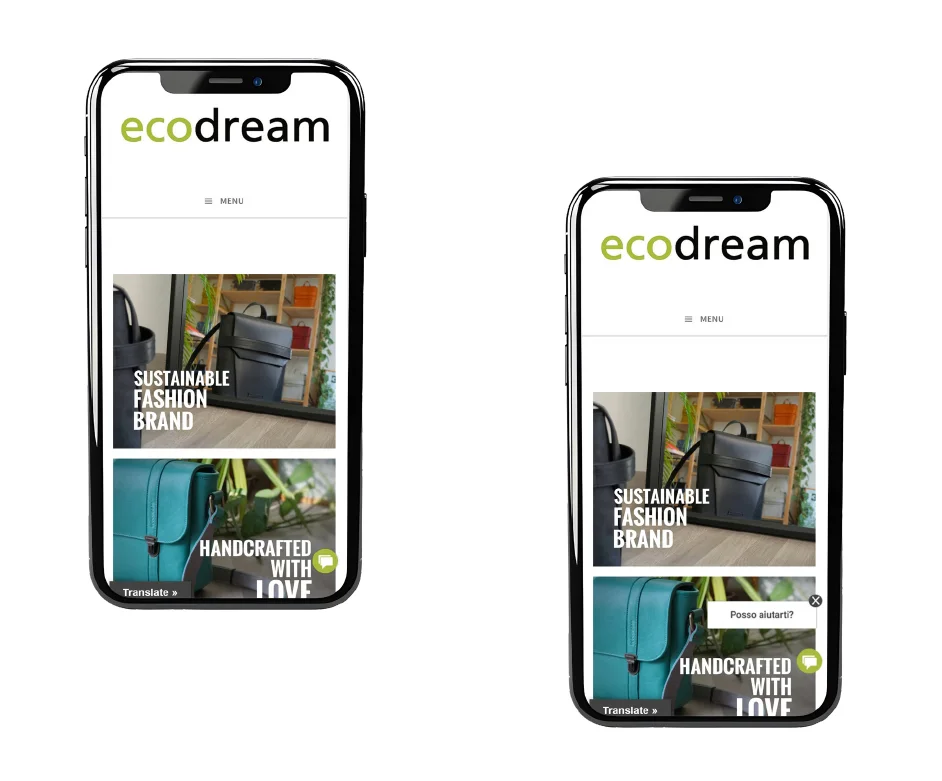
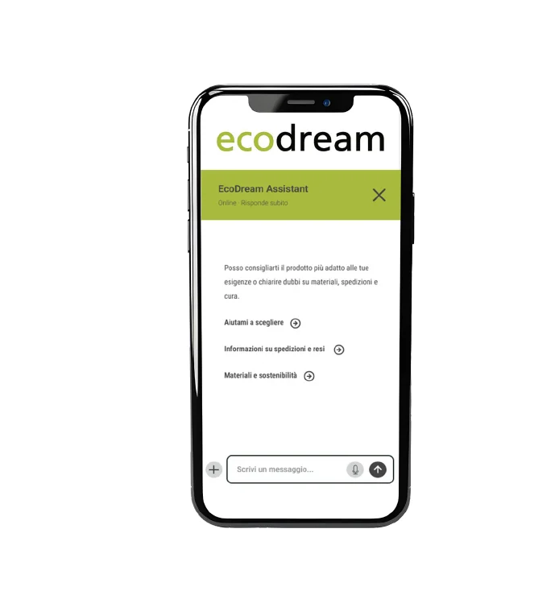
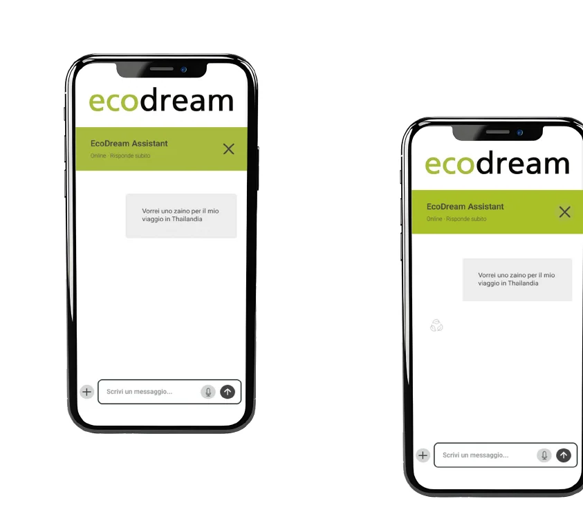
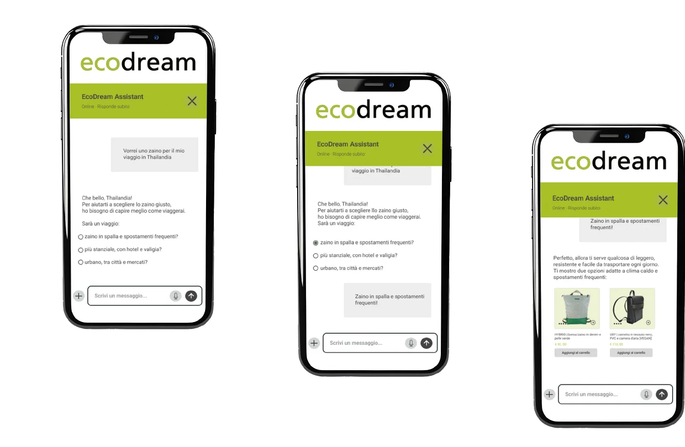
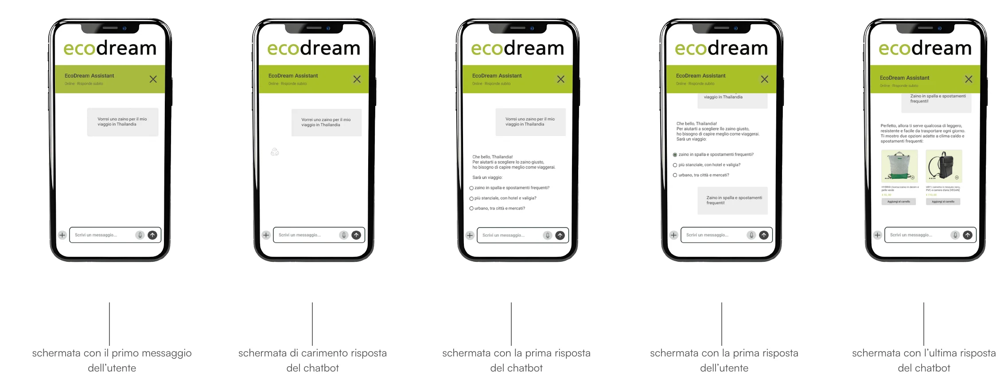

Agenti AI per UX/UI Design
Un chatbot intelligente al servizio dell'utente: un assistente per il sito di Ecodream Design.
Il punto di partenza
Analisi dell'e-commerce
Ecodream Design vende borse e zaini da materiali di scarto. Dall'analisi con le euristiche di Nielsen e le WCAG 2.2, dai siti dei concorrenti e da un questionario a 22 persone è emerso un sito che lascia l'utente senza aiuto.
L'obiettivo: progettare un assistente AI per la versione mobile che sciolga i dubbi, senza fingere di risolvere ciò che va risolto con un redesign.
Analisi
Tre problemi, tre ruoli per il chatbot
Manca assistenza e riprova sociale
Niente FAQ, live chat o recensioni. Per il 50% delle persone intervistate è indispensabile.
Nessuna guida nella scelta
Senza filtri e ricerca non si capiscono varianti, modelli e collezioni. Per il 63,6% è indispensabile.
Testi lunghi: blog o e-commerce?
Blocchi di testo pesanti e gerarchia debole: non è chiaro che si possa comprare.
L'assistente
Un consulente di prodotto
Il suo ruolo principale è aiutare a scegliere con consapevolezza borse e zaini, in base alle esigenze di chi compra. In secondo piano risponde alle domande frequenti su spedizioni, resi, materiali e cura.
Il tono è chiaro, rassicurante e orientato alla sostenibilità: linguaggio semplice ma accurato, mai tecnico, mai promozionale.
Non deve sembrare un venditore.
Deve essere un consulente.
Progettazione
Dall'icona alla conversazione
Verde d'accento #A9BB3E, testo #444444, angoli da 3 px e un Roboto 14 pt leggibile da mobile. Contrasto verificato con le WCAG.





Uso dell'AI
Gli strumenti che ho usato
L'AI ha accelerato il lavoro, la progettazione l'ho fatta io su Figma.
Manus
Analisi del sito con Similarweb e ricerca dei competitor.
Dovetail
Sintesi dell'usability test: trascrizioni, insight e pattern.
Lovable
Prime esplorazioni dei flussi, prima di consolidarli su Figma.
ChatGPT
Supporto trasversale per verificare coerenza e solidità delle scelte.
Nel redesign del sito avevo previsto una chat di assistenza tradizionale. Il concept si è poi evoluto in un chatbot AI con il ruolo di consulente di prodotto.
Non sostituisce gli interventi strutturali: media tra contenuto e utente nei momenti di dubbio, e rende più chiaro lo scopo del sito.